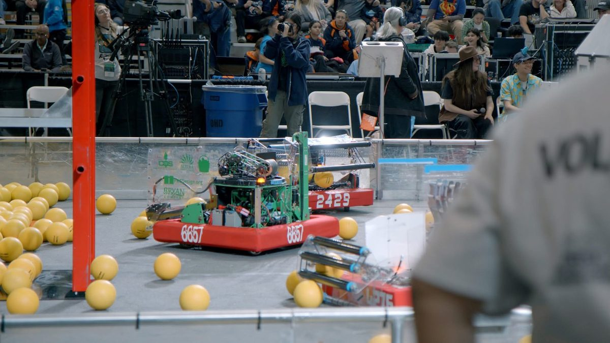
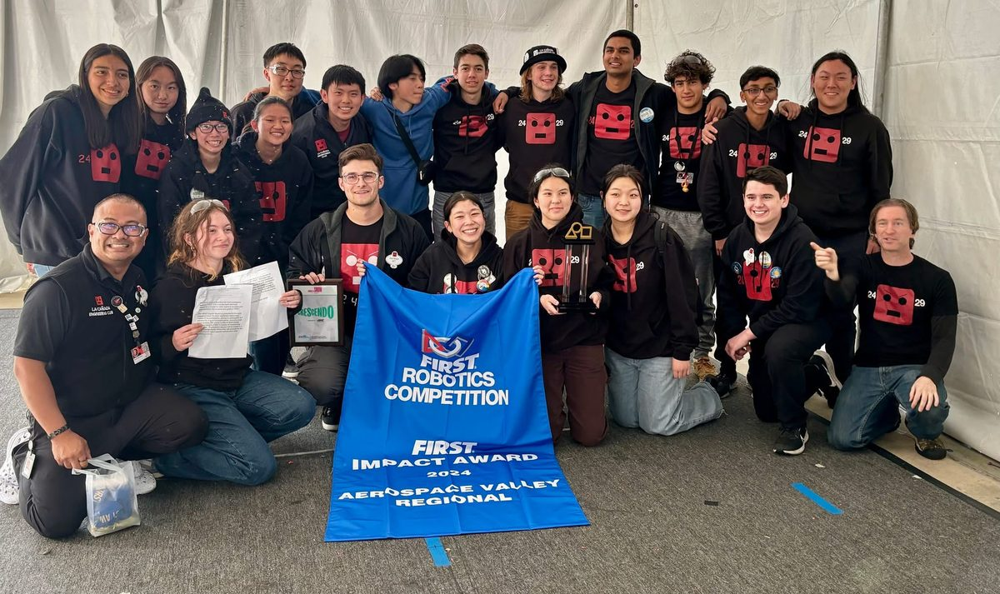

FIRST Robotics — Team 2429


Three consecutive appearances at the FIRST Robotics World Championship as a member of the build team for FRC Team 2429 (La Cañada Engineering Club). I contribute to mechanical design and fabrication, with hands-on work on navigation systems and the robot's arm mechanism.
Our team earned the FIRST Impact Award at the 2024 Aerospace Valley Regional — the highest honor recognizing teams that embody the mission of FIRST through outreach, sustainability, and engineering excellence.
- World Championship — 3 consecutive years
- Build team: navigation & arm subsystems
- Impact Award — Aerospace Valley Regional 2024